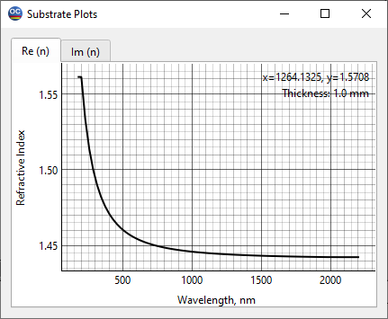

Substrate Plots
The Substrate Plots window provides a visual representation of substrate parameters. Users can navigate between two main tabs located at the top of the window:

Re(n): This tab displays the graphical representation of the substrate’s refractive index.
Im(n): This tab shows the substrate’s extinction coefficient.
Clicking the right mouse button in the active Substrate Plots window opens a popup menu that provides access to the Chart Editor, as well as the Export Chart, Save As, Print, and Copy operations.